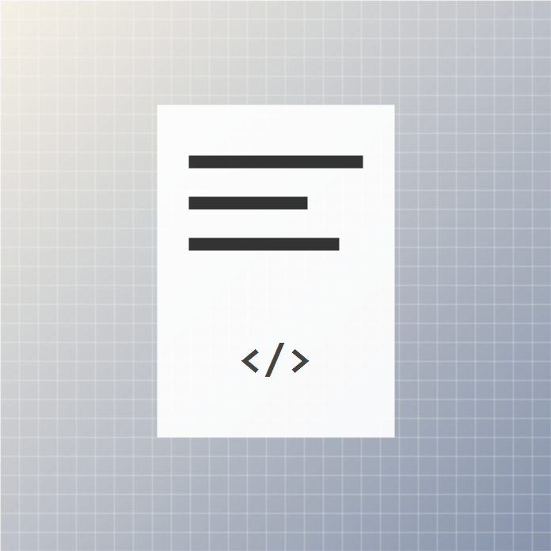

Фритрек и нулевой спринт: Подготовка к работе

<старт>Это было самое начало пути. На этом этапе важно было проникнуться основами и настроиться на учёбу. И, возможно, подумать, как новые знания могут повлиять на ваше будущее.
Я помню это состояние как аккуратный первый коммит: ещё почти ничего не понятно, зато уже есть любопытство и тихое желание дойти до результата.